Git Branches
Moving Beyond a Linear Timeline
Linear History so far
So far we’ve seen a linear history in a project, and how git’s DAG looks like
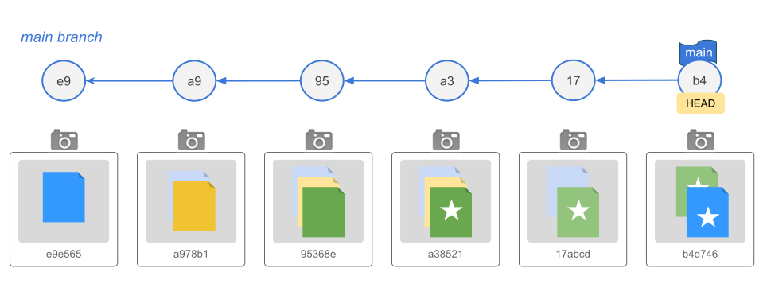
Recall that
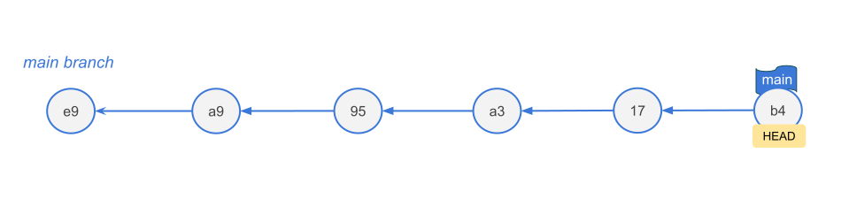
- the default branch is called
main(this is just a moving pointer) - there is another moving pointer called
HEAD(“You are here” label) HEADis a special pointer that attaches itself to your current active branch pointer (which ismainby default)
Git Branches
Moving Beyond a Linear Timeline
In data science, you rarely work on a single feature or analysis at a time.
- Do experiments:
- try out a new color scheme for your graphics
- change simulation settings
- Implement new ideas:
- fit an alternative regression model,
- use functions from a new package
- Develop features:
- add an interactive map to a dashboard
- Fix bugs
- fix broken pipeline
Branches allow you to isolate your work safely.
Analogy
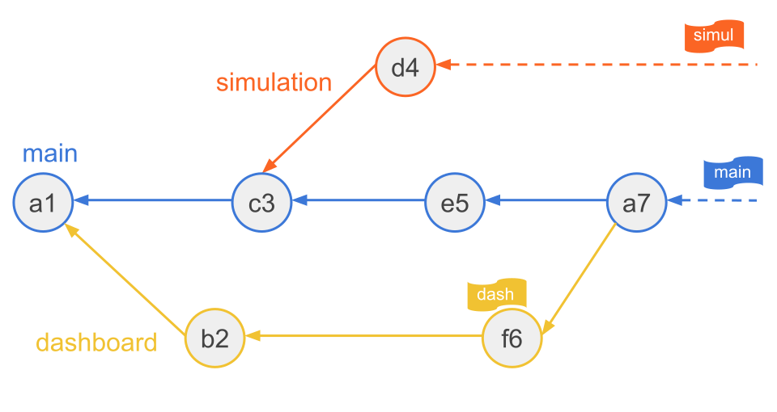
Think of a branch as a parallel universe. You can test a risky new machine learning model in Universe B without destroying the clean, working code in Universe A.
What Exactly is a Git Branch?
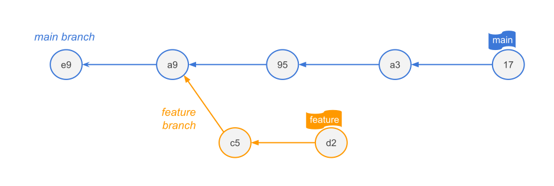
A branch is NOT a heavy folder containing copies of your files.
A branch is simply a lightweight, movable pointer to a specific commit in your history graph.
Creating a branch is instantaneous and costs almost zero disk space. It just creates a 41-byte text file containing a commit hash.
When to use branches?
Feature Development: Writing a new data cleaning function or engineering a new feature.
Experimentation: Testing a different model architecture (e.g., switching from a Random Forest to an XGBoost model).
Bug Fixes: Fixing an error in your data parsing script without pausing ongoing analysis.
Collaboration: Every team member works on their own branch, keeping the main branch stable, tested, and deployable at all times.
Essential Branching Commands
Create a branch
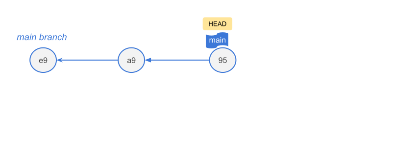
Create a branch (option 1)
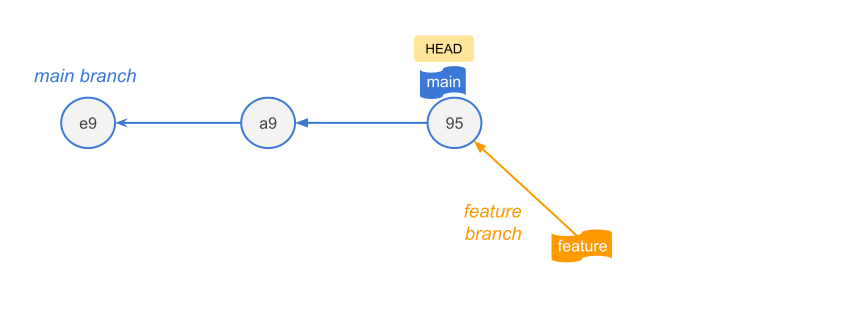
Creates a branch: creates the pointer, does not switch you to it.
Create a branch (option 2a)
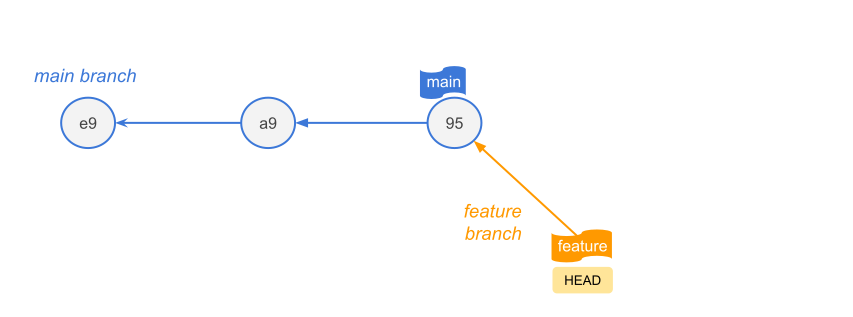
Create and Switch in one go: creates the pointer, and switch you to it.
Create a branch (option 2b)
Same as git switch -c <branch-name>
Switching to existing branches
Working on branches
Working on branches
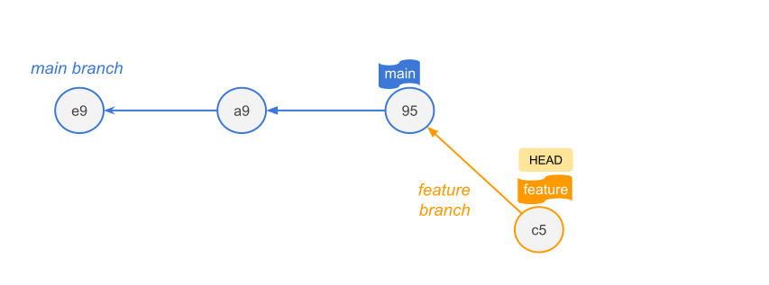
Working on branches
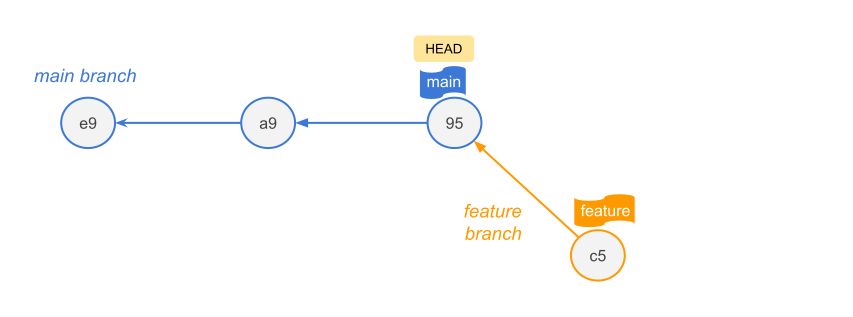
Working on branches
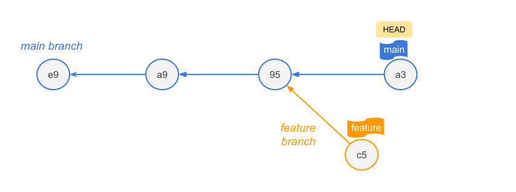
Working on branches
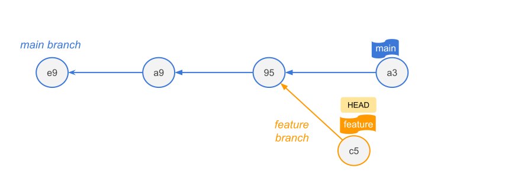
Working on branches
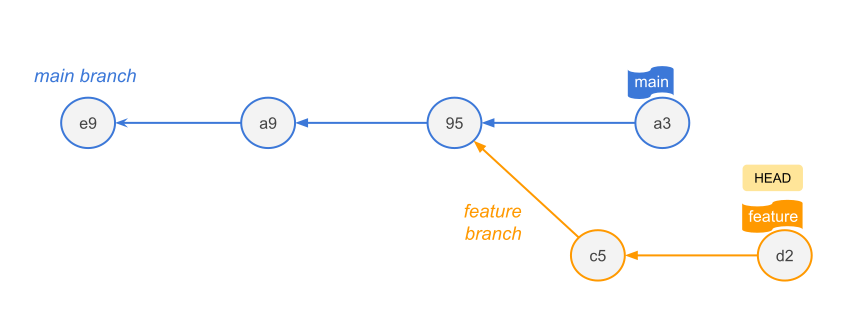
Other commands
Other commands
Other commands
Other commands
Traps and Confusing Things to Avoid
Trap: Uncommitted changes
Description: If you edit a file but do not commit it, and then switch branches, those uncommitted changes travel with you to the new branch.
Rule: Always run
git statusand commit or stash1 changes before switching branches.
Traps and Confusing Things to Avoid
Trap: Brain-dead Branch Names
Description: Avoid naming branches like
git branch test1.Rule: Use semantic naming
Traps and Confusing Things to Avoid
Trap: Losing Track of
HEADDescription: If you checkout a specific commit hash instead of a branch name, you enter a “Detached HEAD state”. Commits made here do not belong to any branch and can easily be lost.
Merging Branches
Merging
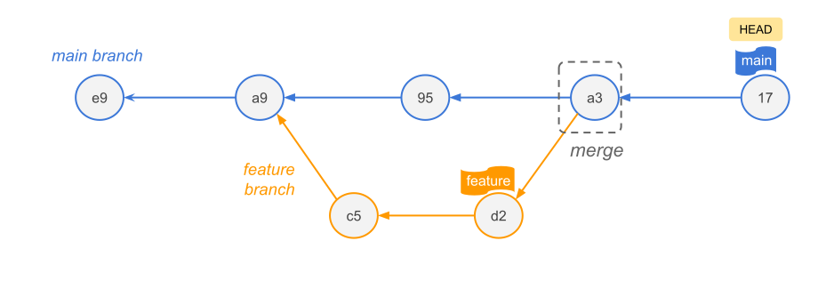
You can integrate the changes of a branch into another branch by merging these branches.
Afterwards, the commits of the new branch (e.g. “feature”) are also part of the main branch’s history.
Types of Merges
2 main types of merges:
Fast-Forward Merge
- Occurs if
mainhasn’t changed since you branched off. - Git simply slides the main pointer forward to match your feature branch pointer.
- No new commit is made.
Three-Way Merge
- Occurs if
mainhas moved forward while you were working. - Git looks at the common ancestor, merges the differences.
- Git creates a new Merge Commit node with two parent pointers.
Fast-Forward Merge
If the base branch (main) has not received any new commits since you created the feature branch, Git completes the merge by simply moving the branch pointer forward to the latest commit of the feature branch.
No new “merge commit” is generated because there are no divergent changes to reconcile.
Three-Way Merge
If both the feature branch and the main branch have moved forward independently with new commits, the history has diverged.
Git combines changes from two divergent branches and creates a special Merge Commit with two parent pointers.
The term “three-way” refers to the three snapshots Git compares to generate the merged file:
The Common Ancestor (Merge Base): The point in history where the two branches originally split. It acts as the baseline.
The Target Branch (HEAD): The tip (most recent commit) of the branch you are currently on and merging into.
The Source Branch: The tip of the branch you are actively trying to merge.
Merge Conflicts
Merge Conflicts
There can be conflicts when branches are merged.
A conflict happens when two branches modify the exact same line of the exact same file, and you try to merge them.
Git doesn’t know which version is the correct one.
Resolving conflicts
The process of resolving a conflict is similar to the usual commit workflow:
- Modify: Resolve all conflicts.
- Add: Add all changes to the staging area via
git add. - Commit: Conclude the conflict resolution and the merge operation via
git commit.
Merge Conflicts
Git pauses the merge, alters your file to show the conflict markers (<<<<<<<, =======, >>>>>>>), and forces you to manually edit and fix the code before committing.
INSERT IMAGE
Strategies to reduce conflicts
- Try to keep lines short (makes it easy to spot where the conflicts are).
- Try to keep your commits small and focused.
- Try to merge often. In this way, the conflicts will be smaller and more isolated.
- The longer you wait to merge, it will be more likely to have bigger conflicts.
- Track changes to main.
Stashing
Stashing
Imagine you are in the middle of writing a new feature, and your code is completely broken and full of typos.
Suddenly, your professor or project manager sends an urgent message: “The login screen is completely broken on the main server. Fix it right now.”
You can’t switch branches to fix the bug because Git won’t let you switch branches while you have dirty, uncommitted changes.
But you also don’t want to run git commit on broken, unfinished work just to save it.
This is where you run git stash
How Stashing Works (The Workspace Analogy)
Think of your code folder like a messy physical desk full of scribbled-on scratch paper and unfinished blueprints:
git stash: You take all the messy papers on your desk, shove them into a drawer, and lock it. Your desk is now perfectly clean.The Emergency Intermission: You safely switch branches, write a clean 1-line fix for the server bug, commit it, and push it.
git stash pop: You open the drawer, take your messy papers out, and spread them back out on your desk exactly where you left them. You can now resume your work as if you were never interrupted.
Two Mistakes Beginners Make
Untracked Files: By default, git stash only saves files that Git already knows about. If you created a brand new file and haven’t run git add on it yet, Git will leave it sitting on your desk. To force Git to stash everything including new files, you must run:
git stash -u(short for untracked).The Stash Black Hole: If you run git stash five times over a week without using
git stash pop, you will end up with a massive pile of nameless stashes. It becomes very difficult to remember what code is hidden insidestash@{4}.